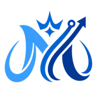

Websites &
funnels
A clear online presence and a focused next step for your visitors.
- Business websites
- Landing pages & lead capture
- Forms & booking connections

MARY DIGISOLUTIONSChoose the area you want to improve. We will help shape a practical scope around your business, current tools, and priorities.
A clear online presence and a focused next step for your visitors.
Keep inquiries, appointments, and follow-up connected to the work.
Support for presenting your offer and keeping everyday work organized.
For businesses that need a stronger online presence or a focused page for a specific offer.
See website & funnel work ↗For teams handling inquiries, appointments, follow-up, and client information across multiple tools.
Explore our system review ↗For founders and teams that need help presenting the offer and keeping everyday work organized.
See video & creative work ↗The starting price applies to entry-level work. Your quote will confirm exactly what is included, the timeline, payment arrangement, and any required platform or subscription costs. Larger builds and ongoing support are scoped separately.
Share your current setup and the goal you want to work toward. We will help you identify a practical starting point.